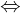
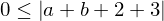

Expression of type Iff¶
from the theory of proveit.numbers.absolute_value¶
In [1]:
import proveit
# Automation is not needed when building an expression:
proveit.defaults.automation = False # This will speed things up.
proveit.defaults.inline_pngs = False # Makes files smaller.
%load_expr # Load the stored expression as 'stored_expr'
# import Expression classes needed to build the expression
from proveit import a, b
from proveit.logic import Iff, InSet
from proveit.numbers import Abs, Add, LessEq, RealNonNeg, three, two, zero
In [2]:
# build up the expression from sub-expressions
sub_expr1 = Abs(Add(a, b, two, three))
expr = Iff(InSet(sub_expr1, RealNonNeg), LessEq(zero, sub_expr1))
Out[2]:
In [3]:
# check that the built expression is the same as the stored expression
assert expr == stored_expr
assert expr._style_id == stored_expr._style_id
print("Passed sanity check: expr matches stored_expr")
In [4]:
# Show the LaTeX representation of the expression for convenience if you need it.
print(expr.latex())
In [5]:
expr.style_options()
Out[5]:
In [6]:
# display the expression information
expr.expr_info()
Out[6]:
| core type | sub-expressions | expression | |
|---|---|---|---|
| 0 | Operation | operator: 1 operands: 2 | |
| 1 | Literal |  | |
| 2 | ExprTuple | 3, 4 | |
| 3 | Operation | operator: 5 operands: 6 |  |
| 4 | Operation | operator: 7 operands: 8 |  |
| 5 | Literal |  | |
| 6 | ExprTuple | 11, 9 | |
| 7 | Literal |  | |
| 8 | ExprTuple | 10, 11 | |
| 9 | Literal |  | |
| 10 | Literal |  | |
| 11 | Operation | operator: 12 operand: 14 | |
| 12 | Literal |  | |
| 13 | ExprTuple | 14 | |
| 14 | Operation | operator: 15 operands: 16 | |
| 15 | Literal |  | |
| 16 | ExprTuple | 17, 18, 19, 20 | |
| 17 | Variable |  | |
| 18 | Variable |  | |
| 19 | Literal |  | |
| 20 | Literal |  |